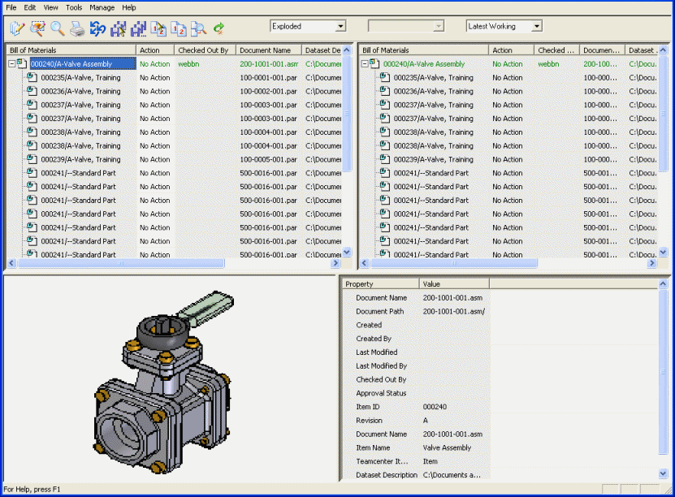

The application interface
Structure Editor utilizes an interface consisting of four window panes to work with the structure of your documents.
The Structure Editor window
The pane in the upper-left quadrant of the Structure Editor window contains the Bill of Materials used for markup. The window pane in the upper-right quadrant is the final view of the Bill of Materials. There is a slider beneath the two window panes so you can scroll to view additional columns of information. You also can resize each window pane.
The lower-left and lower-right window panes contain preview and properties information. If an assembly is saved with a preview, the preview image is displayed in the lower-left window pane. Teamcenter properties display in the lower-right pane. You can resize each window pane individually to adjust the viewing area.

For information about the commands on the toolbar, see Using the Structure Editor toolbar.